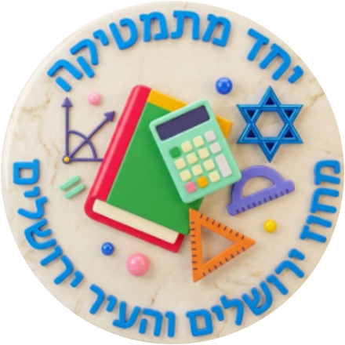

יחס ופרופורציה
סרטון המחשה ודפי תרגול מוכנים לצפייה ולהדפסה.
צופים ומבינים
סרטון המחשה בנושא יחס — איילת קריספין
סרטון קצר ומשלים לפני העבודה בדפים.
מתרגלים ומדפיסים

סרטון המחשה ודפי תרגול מוכנים לצפייה ולהדפסה.
סרטון קצר ומשלים לפני העבודה בדפים.